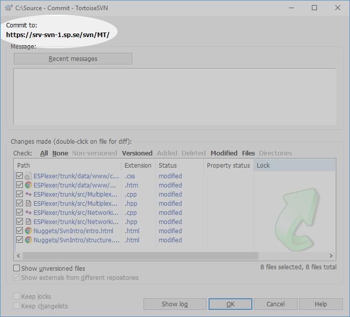
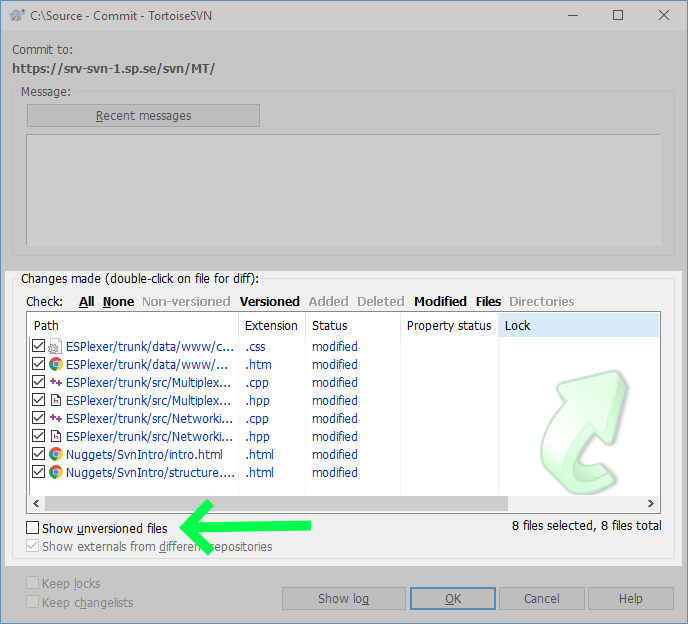
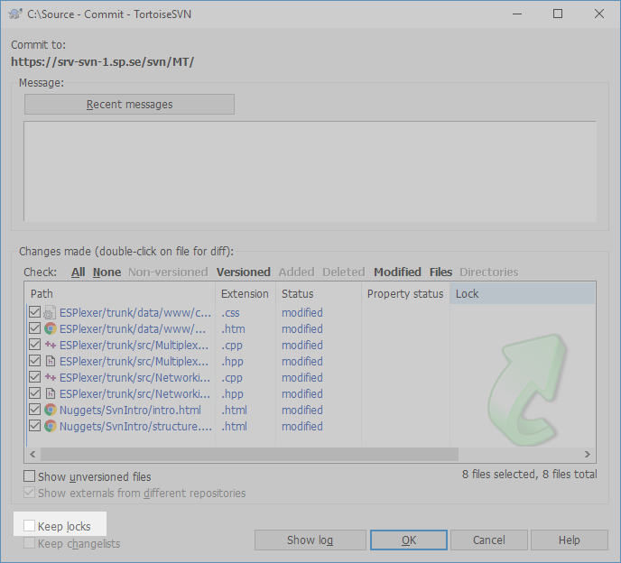

Commit - checka in din kod

Denna dialog är det främsta sättet vi i det dagliga arbetet kommunicerar med källkodshanteringssystemet, det är här vi berättar att vi är klara (i alla fall för tillfället) med en uppgift och vill spara våra ansträngningar. Därför är den värd lite extra text.

Commit to:
Sökvägen till mappen på SVN-servern, till dagligdags kan de flesta av oss ignorera denna
men den gör att vi kan vara säkra på var i trädet vi egentligen begär att checka in ändringar.

Message:
Här skriver vi ett kortare meddelande vad det är vi gjort, en minnesanteckning om VARFÖR vi checkar in de här filerna. Det behöver inte vara en hel novell men några ord som hjälper andra (eller dig själv om något halvår) förstå vad det handlar om.
Här finns också knappen "Recent Messages", kanske har du skrivit ett liknande meddelande tidigare (om förra committen inte gick igenom, till exempel) och då kan du få fram det med den här knappen.
Exempel på bra commit-meddelanden:
- ESPlexer: Fixat en bugg som gjorde att fel volym räknades ut
- UtilClasses: La till klass för att skriva ut tabeller i textformat
- Buggfixar
Där den sista är lite av ett gränsfall, den kan till exempel användas om förändringen bara är i/berör ett projekt och det rör sig om triviala fixar.
Exempel på dåliga commit-meddelanden (som jag själv gjort mig skyldig till):
- Stuff
- En lång kommentar som sammanfattade drygt en månads arbete som berörde nästan alla projekt i källkodsträdet
- So long and thanks for all the fish!
Den första säger ingenting, den i mitten är kanske det bästa att göra i en dålig situation som helt enkelt skall undvikas. Den tredje är bara margniellt bättre (på grund av försök till humor) än den första...
Med dessa varnande exempel vill jag dels belysa dels att det det är viktigt med kommentarer, dels att det kan vara svårt att komma på något bra att skriva ibland men även visa på att källkodshantering kräver en viss disciplin från användarna för att nå sin fulla potential.

Changes made:
Precis som titeln antyder kan man här se vilka filer som är ändrade sedan senaste "Update".
Listan visar normalt ändrade, tillagda och borttagna filer.
Om filen är markerad med en bock till vänster kommer dess ändringar ingå i incheckningen, men detta kan du som användare själv ändra. Till exempel kan man ha spridit ut ändringar i flera projekt och vill checka in dem separat.
Kryssrutan markerad med en grön pil anger ifall man vill visa filer som inte (ännu) är versionshanterad, det kan vara ett smidigt sätt att lägga till saknade filer.

Keep locks:
Eftersom några av er arbetar med binärformat (t ex LabView), har vana från äldre versionshanteringssystem (t ex SourceSafe) eller har andra behjärtansvärda skäl, tänkte jag även nämna funktionen att checka in filer men behålla de lås man eventuellt har. Klicka då helt enkelt i den här rutan!